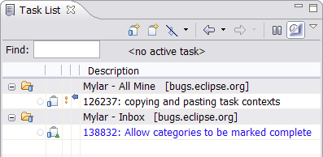
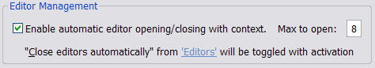
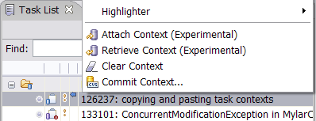
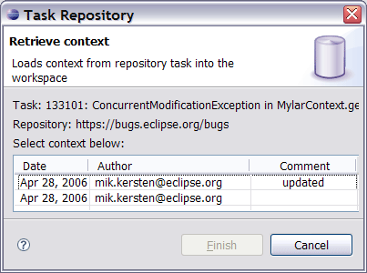
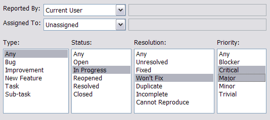

| Release | Resolved | Community Contributions |
| 0.5.1 April 28 |
34 reports |
Brock Janiczak and Eugene Kuleshov made a very substantial contribution of custom JIRA query support. Gunnar Wagenknecht contributed a patch for RC1 compatibility. |
Also see:
-
New & Noteworthy for Mylar 0.4
- New & Noteworthy for
Mylar 0.3
Instructions
|
Misc for 0.5.2 |
Bugzilla editor: can and depends/blocks Bugzilla search: integrated, improved query page, synchronizations improvements Bugzilla: no more HTML parsing, work for RedHat & other customizations |
|
Apply Mylar to Task Activity |
Similar to how Mylar only shows the resources interesting to a task
when applied to a resource view, the Mylar filter will show only the
tasks relevant to the current work week when applied to the Task
List view. This helps reduce information overload for those
that make heavy use of the Task List by focusing on the tasks
scheduled for this week, incomplete tasks that have become
interesting by being worked on recently, and those that are past
their reminders. To mark a task uninteresting set its reminder
for next week or later. Also note that tasks scheduled for
today are highlighted in blue by default (see Preferences ->
General -> Fonts and Colors to change).  |
|
Editor Auto Close |
Editors now close automatically when the corresponding files become
uninteresting. This ensures that the number of open editors
does not bloat, and that the editors match the context visible in
vies like the Package Explorer. Note that when a context is
activated the Eclipse preference for closing editors will be
disabled, and re-enabled on deactivation if previously set.  |
|
|
|
|
Filter Auto Removal |
When Mylar is applied to a view, the existing filters will be removed from the view. This enables Alt+click browsing of all elements (e.g. .settings folder), and ensures that filters such as Referenced Libraries and Working Sets do not hide elements interesting to a context. The filters are restored when the Apply Mylar button is toggled off. |
|
Task Context Attachments |
Task contexts can now be attached to Bugzilla tasks and retrieved
into the workspace, via the Task List popup menu. When a task
has a repository context the lower-left repository icon turns purple and
gets taller. Note: not (yet) supported on Bugzilla 2.18.   |
|
|
|
|
End of Support for 2.16 |
This release marks the end of both bugzilla.org and Mylar support for Bugzilla 2.16, so those using the old installation will need to upgrade. |
|
Custom Queries |
In addition to using filters stored on the server, custom JIRA
queries can now be added via New Repository Query wizard.  |